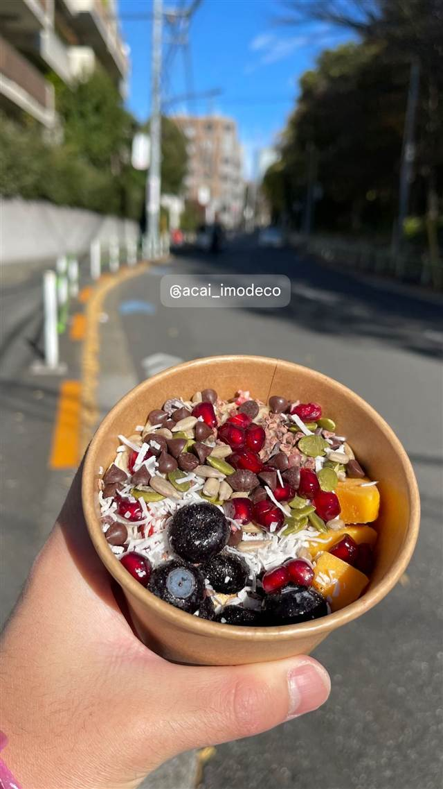

LEXUS MEETS..."HIBIYA"
五街道をあんの色と味で表現した日比谷五街道団子
LEXUS MEETS”HIBIYA”
LEXUS MEETS...HIBIYAはトヨタ自動車が展開するLEXUSのカフェラウンジ。テーマは「道」で、豊田章男会長（モリゾウ）の想いを込めてリニューアルされ、名物は五街道をイメージした「日比谷 五街道団子」など和スイーツ。
TRIVIA
へえ、という話
- レクサスのカフェなのに看板メニューは和スイーツの団子
- 豊田章男会長のドライバーズネーム「モリゾウ」の想いを込めてリニューアルされた
REVIEWS
みんなの声
「レクサス展示空間とバスクチーズケーキ」に注目
- 高級感のあるレクサス車両の展示空間でくつろげるという声が多い
- 本格的なバスクチーズケーキなどスイーツの味を評価する声がある
- ランチが千円台からと価格が意外に手頃だと感じている人が多い
- 週末になると入店待ちの行列ができるほど混雑するという声もある
食べログ 口コミ604件
| 看板 | 日比谷 五街道団子 |
|---|---|
| こだわり | 五街道（東海道・中山道・日光街道・奥州街道・甲州街道）を辿るように、あんの色と味わいで各地の魅力を表現した団子を提供 |
| 予算 | 昼 ¥1,000～¥1,999 夜 ¥2,000～¥2,999 |
| 定休日 | 無休 |
| 場所 | 日比谷 東京都千代田区有楽町1-1-2 東京ミッドタウン日比谷 |
| 注意 | 東京ミッドタウン日比谷内。レクサス車両の展示なども見られるカフェラウンジ |
食べたもの：アサイーボウル
NEARBY
近い店・同じ系統の店
-
 アサイー 表参道駅
SO TARTE 表参道店（ソータルト）
卵・乳・小麦不使用、米粉のグルテンフリータルトとアサイー
昼 ¥1,000～¥1,999
アサイー 表参道駅
SO TARTE 表参道店（ソータルト）
卵・乳・小麦不使用、米粉のグルテンフリータルトとアサイー
昼 ¥1,000～¥1,999
-
 アサイー 原宿駅・明治神宮前駅
JBOWL HARAJUKU
ブラジル直送の高グレードアサイーを使うボウル専門店
昼 ¥1,000～¥2,000 夜 ¥1,000～¥2,000
アサイー 原宿駅・明治神宮前駅
JBOWL HARAJUKU
ブラジル直送の高グレードアサイーを使うボウル専門店
昼 ¥1,000～¥2,000 夜 ¥1,000～¥2,000
-
 アサイー 白金高輪駅
ARTISAN LIEN(アルティザンリアン)
焼き立て60秒が勝負と言われる極上スフレ
昼 ¥1,000～¥1,999 夜 ¥1,000～¥1,999
アサイー 白金高輪駅
ARTISAN LIEN(アルティザンリアン)
焼き立て60秒が勝負と言われる極上スフレ
昼 ¥1,000～¥1,999 夜 ¥1,000～¥1,999
-
 アサイー 表参道
THE_B
毎朝整理券が配られるほど行列必至のアサイーボウル
昼 ¥1,000～¥1,999 夜 ¥1,000～¥1,999
アサイー 表参道
THE_B
毎朝整理券が配られるほど行列必至のアサイーボウル
昼 ¥1,000～¥1,999 夜 ¥1,000～¥1,999
-
 アサイー 麻布十番
Me time（ミータイム）
砂糖・乳製品・小麦粉不使用のアサイーボウル
昼 ¥1,000～¥1,999 夜 ¥1,000～¥1,999
アサイー 麻布十番
Me time（ミータイム）
砂糖・乳製品・小麦粉不使用のアサイーボウル
昼 ¥1,000～¥1,999 夜 ¥1,000～¥1,999
-

アサイー 広尾 acai_imodeco（アサイーボウル/広尾/ビーガン）